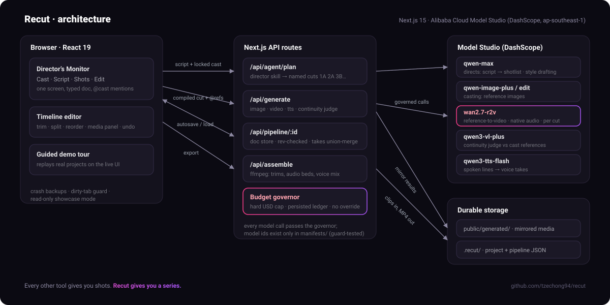

Video models are astonishing per clip and useless per film. Every generation is a fresh roll of the dice: characters drift, styles wander, and scene two stars a stranger. We spent the hackathon building Recut around one idea: fix the film, not the frame.
You cast characters once: generate or upload reference images, crown a
winner, lock it. Paste a script; a director skill built on
qwen-max breaks it into named cuts (1A, 2A, 3B) with blocking,
acting beats, and camera presets, keeping your character names and style
word for word. Each cut goes to wan2.7-r2v, Wan's
reference-to-video model, with the locked references bound by name, so the
same characters come back in every shot, with native audio. Keepers land on
a real timeline: trim, split, reorder, then ffmpeg renders the film with
every clip's own audio bed and TTS dialogue mixed in.
Our first version was a node canvas around the image-to-video pattern: generate a still, judge the framing, then animate the winner. On paper it is the economical choice. A still costs cents and a clip costs dollars, so gating every expensive video behind a cheap approved image feels like discipline.
In practice, i2v only guarantees the first frame. The moment the shot moves, the character starts drifting away from the reference, and the cleanup bill arrives: re-roll the keyframe, re-judge, re-animate, repeat per cut, per character, per revision. The cheap path quietly became the expensive one, because you pay twice for every shot that goes wrong, and at film length something always goes wrong.
i2v looks cheaper per shot. Across a film, you pay twice for every drift. Reference-to-video is consistency by construction, not by cleanup.
So we changed direction mid-hackathon. Locked references now go straight into the video model, which holds identity through every frame and returns motion plus sound in a single generation. One model call per cut. The test that convinced us: a two-character scene where i2v kept merging our two swallows into one average bird. With enumerated reference bindings ("Reference image 1 is yeepi… never merge, swap, or average their features"), both birds survived every cut of a five-cut film.
Architecture
Recut is a Next.js 15 app (React 19, a @xyflow/react node
canvas for the Director's Monitor, Zustand for editor state). The browser
never talks to a model. Every generation goes through App Router API routes
into a single gateway that fronts five Alibaba Cloud Model Studio models on
the ap-southeast-1 DashScope endpoint: qwen-max
directs, qwen-image-plus casts, qwen3-vl-plus
judges continuity, wan2.7-r2v shoots, and
qwen3-tts-flash speaks.

The design goal was to make an unreliable substrate behave. Four layers do the work.
video.r2v, image.edit,
text.plan), what it supports (max reference images, native
audio, seed, duration range), and its per-unit cost. A router picks a model
by capability plus a preference (quality, speed, or cost) and hard
constraints, so calling code asks for "a reference-to-video model that takes
at least two refs" and never names one. Model-id strings live in exactly
one directory (documented as hard rule 1, one line in every manifest);
adding Kling in Sprint 3 was one manifest file plus one serializer, with no
change anywhere else.CompiledPrompt, then a per-provider serializer turns that into
the exact request dialect. Same input, byte-identical output, asserted in a
test. Because the serialized payload is also the cache key, prompts
are reproducible by construction.media entries plus a binding sentence the model cannot average
across: "Reference image 1 is yeepi (character); Reference image 2 is
momo (character). Each reference is a DISTINCT entity; never merge, swap, or
average their features." This is the line that stopped two swallows
from collapsing into one bird.sha256(modelId + canonical(payload) + seed), with
object keys sorted recursively so semantically identical requests hash
identically. The same key is used in replay mode (serve the cached result)
and live mode (call DashScope, then cache), so code proven against fixtures
runs unchanged against real models. The judge demo, the test suite, and a
live generation all travel the same path.Every manifest carries its unit cost, so the gateway knows the price of a
call before it makes it. A budget governor persists cumulative spend to a
machine-local ledger and, in live mode, checks the cap before each
submit: if spent + cost would cross RECUT_BUDGET_USD,
the submitter throws and the call never leaves the box. There is no override
flag. Combined with the replay cache (identical requests cost nothing the
second time), that is how a five-model pipeline got built and demoed on a
ledger under $20.
Durability is the other half. Hosted DashScope result URLs expire in about
a day, so every image, clip, and voice line is mirrored into
public/generated/ the moment it is produced, and reference images
are re-uploaded through DashScope's file API at generation time (the video
endpoint only accepts hosted urls, never data URIs) so the model can always
fetch them.
Keepers land on a real timeline: trim, split, reorder. Rendering is not
a slideshow of stills. The assemble route probes each accepted clip with
ffprobe for its true duration and whether it carries an audio
stream, then builds one ffmpeg graph that concatenates the
ordered clips, honours each clip's trim window, bakes the series LUT
(lut3d), and emits either 1080p landscape or a centre-cropped
9:16 vertical. Each clip keeps wan2.7-r2v's native audio bed, and
TTS dialogue mixes in on top. Real ffmpeg on the host, not ffmpeg.wasm, which
is too slow at 1080p.
We did not build a slideshow. The judge demo replays a real project through the live UI: prompts type themselves into the actual inputs, the director's shotlist lands on the actual storyboard, and the project's real media reveals in place, ending on the author's actual edited timeline. What you watch is exactly what a user does.